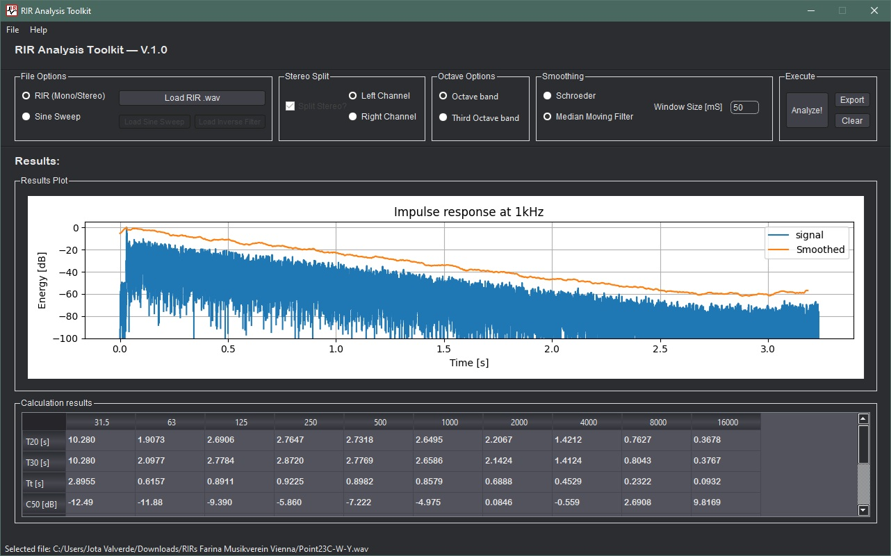

Software de Procesamiento de Respuestas al Impulso
Desarrollo de un software de código abierto con interfaz gráfica (GUI) diseñado para procesar registros de audio obtenidos mediante barridos sinusoidales (Sine Sweeps) y calcular sus respuestas al impulso.
Características Principales:
- Post-procesamiento y linealización del decaimiento.
- Suavizado configurable: Schroeder (integración inversa) o Filtro de Media Móvil (MMF).
- Filtrado digital por octavas y tercios de octava (normas IEC).
Cálculo de Parámetros (ISO 3382):
- T20, T30 y EDT (Tiempo de Reverberación).
- C50, C80 (Claridad) y TT.
- IACCE (Correlación Cruzada Interaural).
Validación de Resultados: Se realizó una comparativa exhaustiva contra softwares comerciales de referencia (Aurora y EASERA). Utilizando el método de suavizado de Schroeder, el código propio mostró una diferencia menor al 9.7% en los parámetros temporales (EDT, T20, T30) a lo largo de las bandas analizadas, validando su precisión para uso académico y profesional.